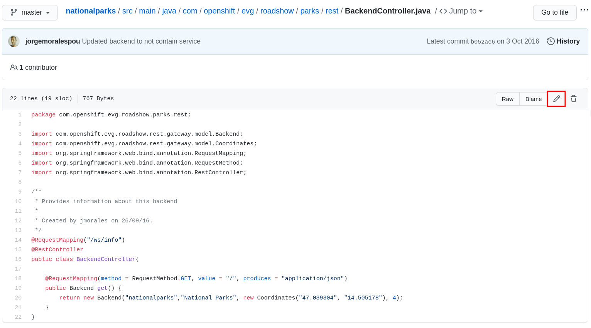

Webhooks with OpenShift As we discussed in the previous module, OpenShift provides the Source-2-Image mechanism to create containers by defining a BuildConfig. In addition to that, it provides triggers to control the circumstances in which the BuildConfig should be run, such as Webhooks. Prerequisite: GitHub Account We will demonstrate the automation capability with OpenShift, and in order to do this, we need you to have an account on GitHub. If you don’t have an account on GitHub, please create one here. Background: Webhooks Most Git repository servers support the concept of web hooks — calling to an external source via HTTP(S) when a change in the code repository happens. OpenShift provides an API endpoint that supports receiving hooks from remote systems in order to trigger builds. By pointing the code repository’s hook at the OpenShift API, automated code/build/deploy can be achieved. Exercise: Webhooks with OpenShift In this lab you can use a build webhook to trigger a build execution every time there is a change in your copy of the nationalparks GitHub repository. In the OpenShift web console, navigate to your %PROJECT% project, and then click to Builds. Click the nationalparks BuildConfig and then go to the Webhooks section. On this screen you will see the option to copy the GitHub webhook URL, click to Copy URL with Secret as shown in the following image: Exercise: Fork NationalParks repository from GitHub A fork is a copy of a repository. Forking a repository allows you to freely experiment with changes without affecting the original project. In this step we will fork the original nationalparks repository to apply our changes and automatically trigger the Pipeline through a GitHub Webhook that we’re going to configure. Go to Nationalparks repository. From top-right side, click to Fork to start forking it into your account. Select your account, and click Fork Your repository is forked now, we can start adding our automation to that. Exercise: Configuring GitHub Web Hooks Once you have forked the repository and you have the Webhook URL with Secret copied to your clipboard, navigate to the code repository fork that you have on GitHub. From your fork page top-right menu, click Settings. Then from result left-side menu, click Webhook, then from right side click Add webhooks. In the next screen, paste your link into the "Payload URL" field. You can leave the secret token field blank — the secret is already in the URL and does not need to be in the payload. Change the Content Type to application/json. Finally, click on Add Webhook. Boom! From now on, every time you commit new source code to your GitHub repository, a new build and deploy will occur inside of OpenShift. Let’s try this out. Exercise: Using GitHub Web Hooks Click the Code tab in GitHub. This is GitHub’s repository view. Make sure that the drop-down menu at the upper right is set for the master branch. Navigate to the following path: src/main/java/com/openshift/evg/roadshow/parks/rest/ Then click on the BackendController.java file. Once you have the file on the screen, click the edit button in the top right hand corner as shown here:  Change line number 20: return new Backend("nationalparks","National Parks", new Coordinates("47.039304", "14.505178"), 4); To return new Backend("nationalparks","Awesome National Parks", new Coordinates("47.039304", "14.505178"), 4); Click on Commit changes at the bottom of the screen. Feel free to enter a commit message. Once you have committed your changes, a new Build should almost instantaneously be triggered in OpenShift. From OpenShift Web Console, click Builds→nationalparks and then navigate to the Builds. You should see a new one running: or run the following command to verify: oc get builds Once the build and deploy has finished, verify your new image was automatically deployed by viewing the application in your browser: National Parks Info Page You should now see the new name you have set in the JSON string returned. To see this in the map’s legend itself, you will need to scale down your parksmap to 0, then back up to 1 to force the app to refresh its cache. Application Healthchecks GitHub Actions with OpenShift